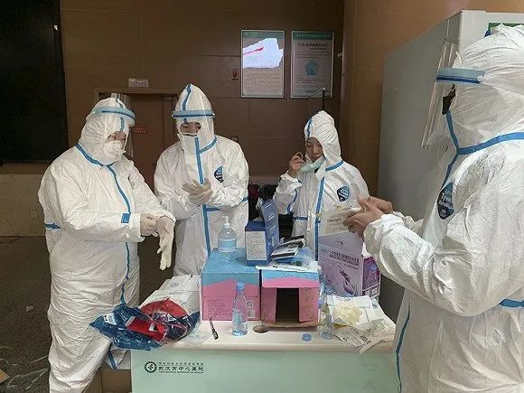
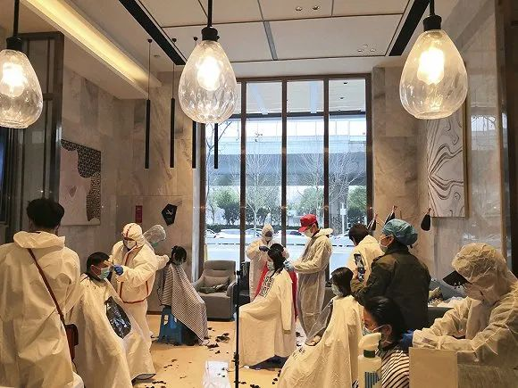
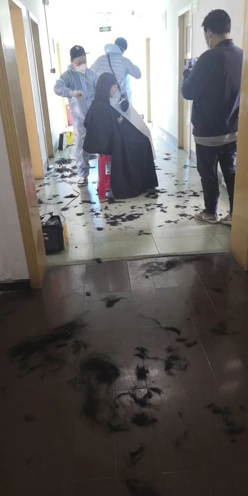
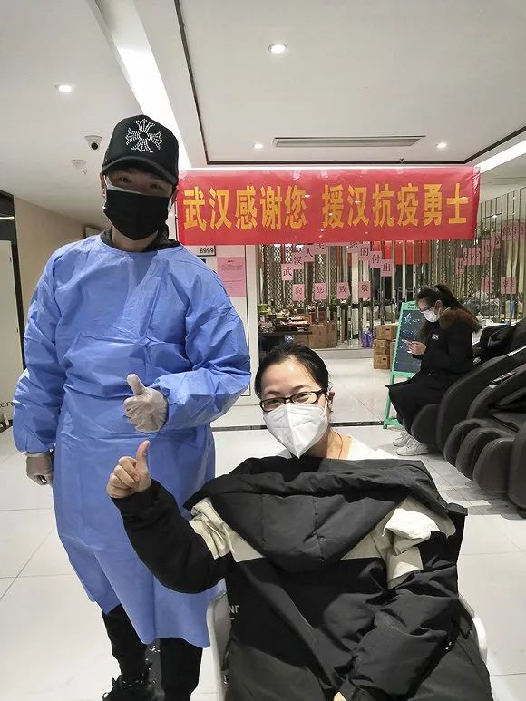
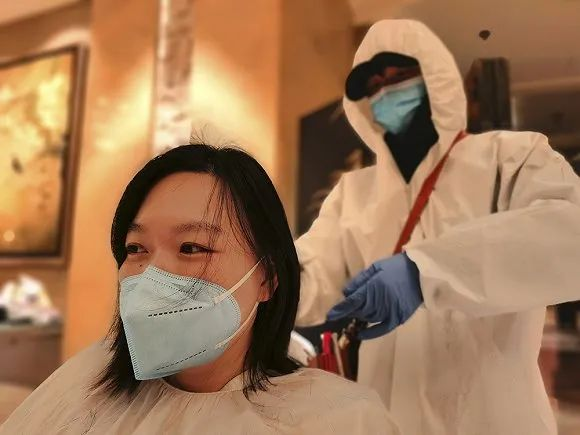
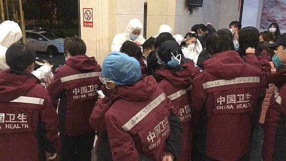
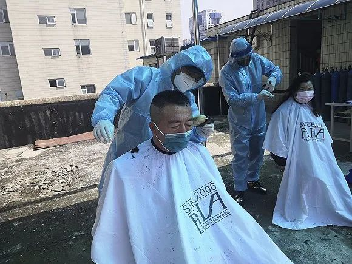
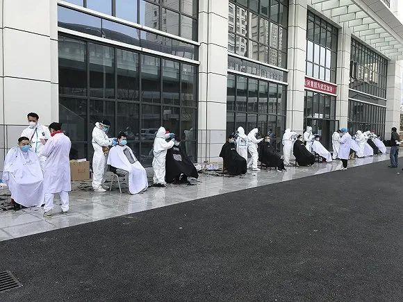

武汉同济医院里的“Tony理发屋”
原文链接 备份链接 ********** *****他们都希望，和这座城市的人们一起，用自己的方式向医护人员表示谢意。***** 武汉同济医院理发屋，志愿者在剪刀上喷洒酒精。受访者供图 文 | 新京报记者 张惠兰 编辑｜王婧祎 校对 | …

口述 ：Johnny
采访、文 ：杨溪
“
我们的目的和初衷是希望在安全的情况下，尽可能保留医护人员漂亮的一面。很多医护人员中途就又打电话联系我，说上次头发剪完了想再修一修，我就回去再帮他们重新设计，修剪一下。他们说已经看到希望了，可能不需要多长的时间就可以回家了。
”
1
我是武汉的一名发型师，今天（3月12日）早上8点半，我开车接上两个伙伴，一小时后赶到了河北援汉医疗队入驻的酒店。这是我们第三次来这家酒店。
江岸方舱医院休舱以后，河北医疗队就在酒店原地待命休整。很多医护人员之前剪完头发觉得不太好看，想重新修剪一下，还有些是之前没有剪上的，头发很长了，就约我们过去。
我到那一看，很多人的头发都乱七八糟的。我说你这头发是自己剪的？有的说是科室的护士剪的，有的说是科室的医生剪的。当时要进舱了嘛，找不到理发师，他们就互相剪头发，拿手术剪刀剪，或者找酒店借剃须刀剃，一个个都跟电影里的癞子头一样。
我们三个人花了一个上午，修剪了30多人。下午去了另外一家酒店，那里住着河北医疗队其余一部分医护人员，还有安徽医疗队，又剪了70多人，一直忙到晚上七点钟左右。
一天剪下来的头发，我没有统计过，少说也有十几斤吧，堆起来大概有大号垃圾桶的半桶那么多。
我是2月15日加入志愿者团队的，印象特别深，那天下着大雪，整个城市灰蒙蒙的，也没有人，很荒凉，就像电影《流浪地球》里的场景一样。
我们前期接的都是援汉医疗队，因为考虑到他们当时比较安全。那一个星期每天都有差不多一两千人的医疗队到武汉来，我记得很清楚，第一天服务的是海南医疗队和陕西医疗队，医护人员加起来有200人左右，我们七、八个理发师从早上八点多一直剪到凌晨一点半。因为很多人凌晨就要进光谷方舱医院接诊病人了，所以我们必须要在那之前帮他们把头发打理好。
理发师也要穿防护服，戴口罩和手套。刚开始我特别不习惯，还提过意见，说我们没有必要穿防护服，这些东西应该留给医护人员，他们更需要。但是负责协调的志愿者说，医疗队过来时很健康，可我们不能保证现场的志愿者的情况，所以穿防护服既是保护我们自己，也是保护他们。我就接受了。其实我当时只是心疼，因为那会儿物资不是特别充足嘛，我们又都是在家隔离了20多天的人，我想既然大家都是健康的，是不是没有必要穿防护服。
戴着手套剪头发，经常就把手套剪破了，因为你不知道那个手感，抓头发都抓不准。所以刚开始的一段时间，我们剪的头发不能叫好看，只能说帮他们解决问题，边上剃掉，短，打薄，让他们好洗，好干，不被感染。平时我们剪一个头发都要半个小时、一个小时，这时候真的就是5到10分钟一个人，最夸张的一天我差不多剪了80多人。
以前一天接待的顾客也就是6到8个人，最多10个人，就觉得很忙了。可那一天下来，虽然也觉得有点累，却没有平时那种乏力的感觉。可能还是有点应激反应吧，亢奋，就觉得我在做一件很崇高的事情。
理发师们在做准备
 全副武装的理发师们
全副武装的理发师们
理发师们正在工作
酒店里到处都是头发
Johnny和医护人员
2
决定做这件事，还是跟我之前的一位邻居有关。
2月13日，她给我打电话，问我在不在武汉，能不能帮她理个发。她是儿童医院五官科的护士，要去雷神山执行任务了。电话里她有一点哽咽。
我们以前是邻居，很巧的是，通常她下班我去上班，我下班她去上班，很多时候就是在楼梯的走道碰上了，打个招呼。她跟我老婆接触得多一些，她儿子跟我儿子差不多大，之前天天在一起玩。
当时她给我打这个电话，还说不敢回家剪，不想让儿子看到。她也不敢让我去医院，怕对我不好。后来她老公来接我，去她妈妈家里剪。路上她老公就说，接到任务时她确实哭了，因为恐惧。再加上要把头发剪短，女孩子嘛，还是会不舍得。
见面以后，我问她头发要怎么剪。她说能不能剪一个女式的平头？我当时就很震惊，我说女式平头，没有听说过这个词，为什么要剪平头呢？她说我们去那边很危险，不知道去了会是什么样，为了避免被感染到，手术帽盖住的地方不能有头发冒出来，两边都得剃掉。所以她就想到了平头。
当时我心里特别难受，一个很爱美的女孩子突然说要剪平头，那种感觉你没有办法体会。她原本的发型是比较时尚的中长发，烫过的。我就想怎么能尽量让她漂亮一点，建议她两边剃掉就可以了，上面的可以保留。
她说那是一个什么样子的发型呢？我说你见过邓紫棋那个发型吗，两边都推掉，上面留一层，也很帅气的。我帮她把头发梳了梳，上面那个地方扎了一个辫子。她头发特别多，又很硬，不是很好扎，我扎了半天，把下面怕感染的地方剃掉，又把上面那一层的长度剪到肩膀，方便她以后扎辫子。剪完之后她照了照镜子，觉得还可以，说就先这样吧。
后来，这款发型成了继光头之后，一线女医护理得最多的发型。其实剃光头反而摩擦力不够，口罩、帽子戴不住，容易跑。相反那个发型既减少了感染的风险，也好洗，她们每天都要洗头发嘛，休息时间又不够，这样剪完之后也能洗得快一点好去休息。疫情结束之后，她们还能漂亮一点。
在这之前，我也看到了抖音上面有医护人员剃光头眼泪哗哗流的视频，当时对我的触动还没有那么大。但是，当这件事发生在认识的人身上，对我的触动就特别大了，我就说我一定要去做这件事情。
2月13日接到她的电话帮她理了发，第二天情人节，我没有出去。当时也在想，出去就要冒很大的风险，家里还有孩子，有点下不了决心。我爱人以前也是做护士的，她其实蛮能体谅，后来我们沟通了一下，她就说你去吧。

 Johnny在为女医护理发
Johnny在为女医护理发

理发后的女医护
3
刚开始的时候，蛮多女孩子剪着剪着就哭了。说实话我是一个比较感性的人，看到这些场景往往会忍不住。
我印象特别深，佛山医疗队的一个女孩子，头发是到大腿的长度。她是汉服爱好者，家里有几十套汉服，平时特别爱美，喜欢把头发编成各种复古的造型，穿汉服出去拍照。那天剪头发，她说第一刀一定要她自己剪，不然舍不得。
她没有说这个头发留了多少年，但是我能够初步判断至少是10年以上。她剪那一刀的时候，毫不夸张地形容，就跟电影里面自己割肉的感觉是一样的，眼泪哗哗往下掉，整个人都在发抖。
她那一刀剪完，我就安慰她嘛，我说其实也不是非要剪得那么光。我尽可能帮她把头发保留了长一点点，里面剃掉，外面那层剪到了胸以下。剪完之后，她笑着说其实这样子也挺好看的。当时我就觉得，作为一个发型师，能够在这件事情上帮到她们，真的很有成就感。
我还碰到几个蛮漂亮的小姑娘，她们之前烫过那种大波浪卷发，染过颜色，开玩笑说我这个头发是680烫的，年前才做的，你这一刀下去就没了，这个头发剪得可贵了。她们当时就是这样子调侃的，感觉到她们其实也很无奈。
我们去的目的和初衷是希望在安全的情况下，能尽可能保留她们漂亮的一面、女性的一面。但是很多女孩子一上来就说，你给我把周边和后面都剃掉吧。她说我能活着回来，后面想怎么漂亮就怎么漂亮，头发剪短了可以再长，但是我进去了如果出不来，命只有一条，我不可能去冒这个风险。
有一次我给广西医疗队的一个女孩子剪头发，我当时想着，不管怎么样，留个圆寸也好一点。我跟她沟通了一下，剪完之后，她说不行，还是剃光。我就问她为什么，她说我剃光是希望能够健健康康地回去见到我的孩子。
男医护也是这样，上来就说我不要求你剪什么发型，短就行了。基本上大部分就是剃圆寸，比光头长一点点，三毫米。要不就是直接推光。再就是把周边几乎都剃光，上面剪到大概1厘米左右，打得很薄，叫毛寸，就这几种造型。
因为我们前期接触的都是没有进病区的医护人员，他们对病毒也不了解，其实刚开始大家都会有一点点恐慌吧。但是后面这一段时间，从病区出来的医护我们也在接，他们都说可以给我剪得好看一点，帮我剪一个发型吗？可能他们进去之后，慢慢对病毒有了解，没有那么恐惧了。很多人中途就又打电话联系我，说上次头发剪完了想再修一修，我就回去再帮他们重新设计，修剪一下。他们说已经看到希望了，可能不需要多长的时间就可以回家了。
 理发师正在帮一名女医护理发
理发师正在帮一名女医护理发
 理发师为男医护推头
理发师为男医护推头
4
从2月15日到现在，我们没有休息过。其实根本就服务不过来。支援武汉的医疗队大概有3万多人，我们这个团队大概服务了不到1万人，还有好几个志愿者团队也在做这件事。
每天中午11点半到12点，我们跟医护人员一起领盒饭，大家分批去吃饭。每个地方的盒饭都不一样，据说援汉医疗队每天每人是200块的标准，也就是说一餐盒饭100块。我感觉是有的地方做得好，有的地方做得不好。之前去过一个医疗队的定点酒店，酒店厨房正好没有休息，提供自助餐，蛮不错的，有肉有虾，有餐后水果，绝对达到了一天200块的标准。也有地方是达不到的，但到后期的话，医疗队的物资基本上是有保障的。
大部分医护来理发，可能穿的还是他们的“洗手衣”，也有穿自己衣服的，还有穿一次性手术服或者隔离服的。他们很小心，担心会对我们有影响，其实很多人也很紧张，会拿随身携带的酒精消毒液给我们，喷一下围布。有时候喷多了，围布上面会有点湿，围的时候就会有点冰冰凉凉的。
工具都是一客一消毒，每天结束工作之后，我们还会全部再用酒精喷洒一遍，就像做保养一样。一个星期前，我的电推子坏了。刚好志愿者团队里面有一个老板，他是专门做理发工具的，就把店铺里面的工具拿出来无偿给我们使用。
酒精洒多了，手特别干，皮肤会皱，会发暗，没有光泽，灰蒙蒙的，像老年人皱巴巴的双手一样。后来负责协调的领队也给我们每个人发了护手霜。医护人员的物资慢慢多一些之后，看到我们这样子很辛苦，也会把他们自己的酒精消毒凝胶给我们，那个东西比直接喷洒酒精好很多。
除了前期刚过来的医疗队，后面我们服务的医护，99%以上都是没有洗过头发的。可能他们刚刚从舱里面出来，回到酒店，本来是很疲惫的一个状态，一看到有剪头发的，就赶紧过来排队。很多人头发都是扎着的，或者是被帽子压得扁扁的，油油的。我们会看头发变形的程度，如果说很影响理发的，比如头发都是弯的，发根都是倒的，就必须要先喷水再剪。
理发的场地设施，用一句话概括就是一切从简，现场有什么就用什么。有的地方就是一个塑料凳子，有的地方可能是有靠背的椅子。镜子是没有的，很多人剪完头发都会习惯性地把手机打开，用相机或者就直接拿手机屏幕的玻璃照一下。
不太忙的时候，我们也会跟他们聊天。比如说你觉得大概什么时候可以解封，这个事情大概还得多长时间。
这一个多月，医护的变化还是很明显的。没有进舱之前，大部分人都比较紧张，不知道会面临什么。也有年轻的医护很激动，跃跃欲试。慢慢地，随着出院的病人越来越多，确诊的、疑似的越来越少，很多医护在理发时会讨论病情，比如哪一床的病人怎么样了。最近这段时间，听到越来越多的就是他们都很想家，在聊家里的孩子。很多人在理发时还会给家里打视频电话，给她宝宝看，说妈妈今天理发了，有志愿者叔叔来给妈妈理发了。
医护人员来排队理发
 理发师志愿者的签到表
理发师志愿者的签到表
 Johnny领到的盒饭
Johnny领到的盒饭
5
从一开始做这件事情，我就和家人分开住了。我现在住在一个朋友租的房子，他去外地了没有回来，就把钥匙给我，说你平时正好帮我打理一下。每天晚上我回到住处，进门的时候会把自己身上全部喷一遍酒精，包括鞋底，之后就把衣服挂到阳台，基本上进出就是这一套衣服。
我们还有一起的小伙伴，就直接睡车里了，有两次剪得比较晚，正好酒店里面有空余的房间，帮忙安排在酒店住下了。
我是湖北仙桃人，来武汉有20年了，去年刚刚在武汉落户。2000年我18岁，因为没读书了嘛，就想出来学个手艺。说起来也是很巧，我来武汉那天也是2月14日。
我曾经也开过很多次理发店，但经营不善，有时候可能也是机遇的问题。前面几年还是不错的，也积累了一定的人脉，带过很多学生。大概在2014年、2015年，我想做比较高端一点的店嘛，跟两个朋友一起投了差不多180万。但是当时武汉对这一类的店型不是很接受，一下就亏掉了几十万，前面所有的积蓄都亏掉了，还欠了一点债。后来我又出来打了两年工，现在和朋友合伙开了一个小工作室，50多平，5把椅子，两张洗头床。
去年12月31日，我给一个客户做头发，做完下班已经是1月1日凌晨1点钟左右了。他给我看了一条他朋友发来的截屏，说华南海鲜市场出现了不明肺炎。当时我就问他，这是什么？他说他朋友在医院工作，说是SARS。但我们都没太在意，第二天还是正常工作。
那段时间客人特别多，我们每天都是没日没夜地干。到了1月18日，小年夜前后，还是有很多客人来，但是陆陆续续就看到有人开始戴口罩了。有一些客户提醒我们还是注意一下，我就让技师去买口罩，结果他们说周边的药店口罩卖完了，我那一下就感觉到这个情况严重了。我记得我跑了十几家药店吧，买了3包普通医用口罩，N95那时候已经买不到了，我们就戴了双层医用口罩。
年前我们正常营业到腊月二十九（1月23日），就是封城那天。因为有一些客户要做头发嘛，就想着尽可能帮他们做完，再回老家。
1月23日我起床的时候已经过10点了，封城了。我赶紧给那几个客人发信息，想把预约取消，他们也说不过来了。我就直接把店门关了，给父母打电话说回不去了，他们也特别理解，因为我们老家也挺严格的，23日武汉封城，24日仙桃就封城了，大家都待在家里，每天视频电话报个平安。
不知道4月底或者5月初有没有可能复工。这段时间，所有武汉人都没有剪头发，只要一解封，第一时间理发店肯定是最忙的。但是前期复工的困难比较大，不可能一下子允许那么大面积的人员聚集，而且很多人还是会担心，觉得公共场所还是不去的好。
我倒不担心复工以后会有特别大的影响，都是老客户，收入正常还是会进来。而且工作室的房租压力相对小一点。连锁店可能就很难生存，租金比较高，大部分都是流动客，还面临员工工资的压力。他们靠的是现金流，资金链一旦断了，很难撑下去。
理发师在为医护人员理发，现场条件一切从简
志愿者们在露天场地为医护人员理发

志愿者们在医院为医护人员理发
6
这两个月没有收入，我每月还要还8000左右的房贷和车贷，再加上店里的房租。目前房东还没有明确地说要减租。说实话，我这段时间就只能套信用卡。
好在目前小孩子的网课有很多都是免费的，让我轻松了一点点。我儿子今年6岁，马上要上一年级，报了很多幼小衔接的培优班，语文、数学、英语，包括钢琴、画画这些都有学。一旦恢复上课了，要付费去上这些培优班的话，我估计我两个月都撑不下去。
我是月光族，赚的钱还完房贷、车贷，再算上小孩子的培优费用，基本上就没有了。以前有积蓄的时候，我老想着男人嘛，肯定要搞事业，想着去开店，去投资，把生意做大，总觉得钱就等着我们去赚似的。现在我明白了一个道理，人一定要有积蓄。自己平时可能得要更节约一点吧，把钱攒一攒，能够未雨绸缪一下。
很多人说，那你们去理发为什么不收费呢，我说人家是拿命在拼，我们怎么好意思，我们做这件事情真的就没有想过收钱。有朋友问，为什么要去冒这个风险？我开玩笑说，有句话叫“国难当头，匹夫有责”，全国的医疗队伍都来支援武汉了，都已经到一级战备了，我们这个时候能拿着我们的剪刀上，跟医护人员同样站在一线，就是给他们加把劲。
刚开始出来做志愿者的时候，我很小心，不轻易开车门，车窗从来没开过，到了地方就下去干活，回来的时候还会用酒精喷一下车门把手。后来我就发现，路上有很多志愿者。武汉市太大了，人口密度也大，要为这些人做这么多事情，其实需要很多人的付出，服务社区的，帮忙买菜、跑腿的……特别是外卖小哥，他们还是那样子，骑着一个电动车在大街上跑，真替他们捏一把汗。我们志愿者队伍里有几个小鲜肉，90后，他们开玩笑说，自己现在就是整条街最靓的仔。
今天有医护人员问我，樱花现在开了吗？我说往年这个时候，武汉的解放公园、江滩、晴川阁，包括武大和东湖的樱花园都可以看得到。她又问远吗，我们可以去吗？他们很可爱的，他们说我就是想看一下，我不下车，就在车里面看一下行不行？
当时我就想，其实对于这些原地待命休整的医护人员，政府是不是可以考虑搞一辆旅游大巴，载着他们，让他们看看武汉、了解武汉。他们这么大老远地奔赴过来，付出这么多，到目前为止还不知道武汉是什么样子。在他们的印象当中，武汉就是从酒店到病房，从病房到酒店。有人说，我都不知道外面的天气，也不知道外面的时辰，不知道现在外面是星星还是太阳。
但是他们没有办法出去，因为他们接到的命令就是在酒店里待着。现在已经3月中旬了，樱花就是这样子的，可能到4月初，清明节那个时候就没有了。
 理发师志愿者们在武汉市中心医院
理发师志愿者们在武汉市中心医院

理发师志愿者团队，后排右一为Johnny
（题图为理发师志愿者在为医护人员理发。本文图片均由受访者提供。）
未经授权 禁止转载

原文链接 备份链接 ********** *****他们都希望，和这座城市的人们一起，用自己的方式向医护人员表示谢意。***** 武汉同济医院理发屋，志愿者在剪刀上喷洒酒精。受访者供图 文 | 新京报记者 张惠兰 编辑｜王婧祎 校对 | …
原文链接 备份链接 - 疫 情 之 下 - 如今，针对医护人员的出行难，政府已出台各种措施，但还是有个别的需求难以得到满足。高宇说，他会一直坚持到医护人员交通困难问题缓解的那一天。 ” 2020年1月23日，武汉市新型冠状病毒感染的肺炎疫 …
原文链接 备份链接 每个人用自己的方式在守护 为武汉，也为自己 凌晨四点，梦乡深处的人们是否想过，此时的武汉，此时的协和医院，是怎样的场景。 截至2月19日，武汉协和医院西院累计收治新冠肺炎患者1055名，其中重症、危重症患者占 …
原文链接 备份链接 对疫情一线的医护人员而言，理发是一项迫切的需求。头发太长，工作不方便，穿着防护服全身汗湿，还有沾染病毒的风险。接到来自医院的需求，一些理发师从武汉的各个角落出发，到医院或是医疗队驻扎的酒店，免费为医护人员理发。 在每人 …
原文链接 备份链接 我是记者郭静。 见到大连小伙儿小强前，我就听说了他的离奇故事：本打算去湖南办事的他，竟误打误撞，在武汉下了车。为了不露宿街头，他找到了在医院隔离区打扫卫生的工作，就这样，上了抗击疫情的第一线！ 采访，就在他的宿舍，他 …